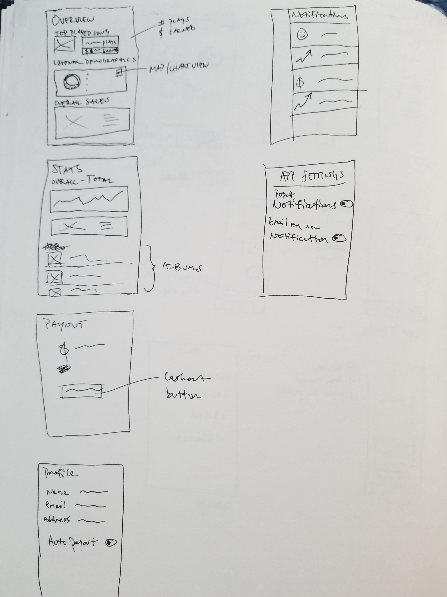
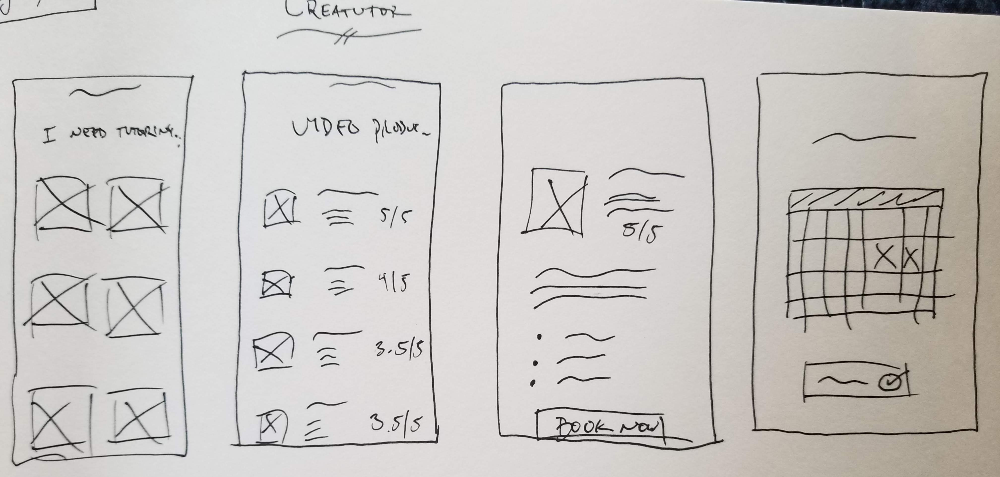
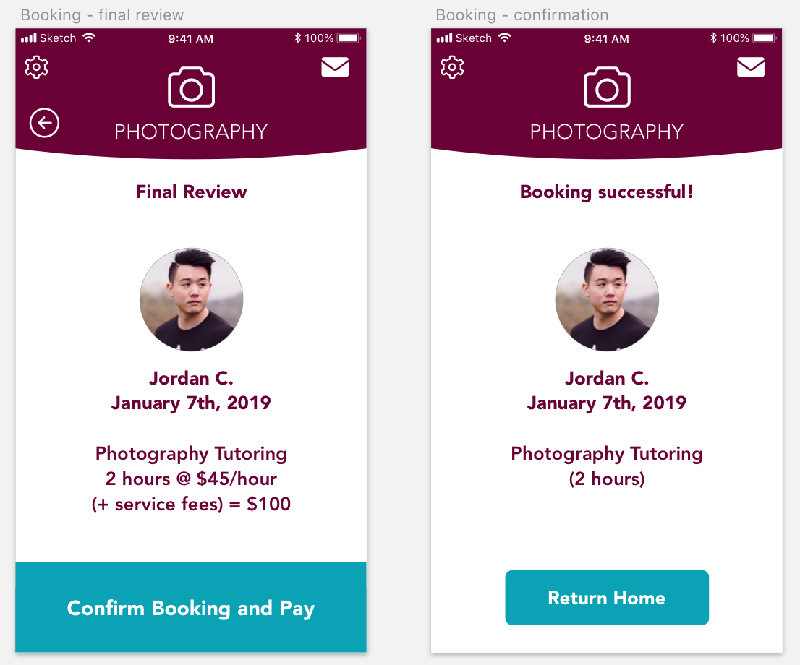

The Materia Collective is an online community of over 600 musicians, arrangers, and composers from around the world who frequently collaborate to produce licensed cover songs for video game music. The Materia Collective now helps video game composers distribute their music to the world, as well as ensure that they receive royalties for their work. Sebastian Wolff (the founder of the Collective) is currently developing a backend dashboard for the Materia Collective which collects and distributes the artist’s royalties every month.
Confusion About Royalties Data
I spoke with several members of the Materia Collective and asked them to walk me through how they would normally collect royalties for their music (emphasizing anything that works well or doesn’t work well in that process). They shared that currently, they just receive a PayPal deposit every month if their payout balance exceeds a threshold of $20. They would also receive an email that month with a giant spreadsheet showing the streaming numbers and earnings data for each song.
They expressed feeling confusion about the lack of clarity from the spreadsheet; because it is so large and contains so much information, it was confusing to figure out how the payments per song and platform were being broken down, as well as where in the world the streams were coming from. I realized from this that there wasn’t really an issue in having the royalties themselves be collected/distributed, but rather an issue of clarity where Materia users were having trouble understanding the data behind the royalties in an easy and concise way.
In talking with these Materia members further, I asked them to walk me through how they would go about understanding the data for their own original releases that weren’t part of the Materia Collective. Several people shared that they really enjoy using the Bandcamp Artists and Spotify Artists apps for their own original music releases. They like that these apps offer them graphs to see how many plays their songs have received, how many purchases have been made for their albums, and from where in the world these interactions happened. They enthusiastically shared how exciting it was to be able to pull out their phone at any moment and check their statistics, and felt extra excited when their data showed that someone had recently purchased their music or merchandise.
Problem Statement
With this information gathered, it was clear that having an easy way to check their Materia Collective music statistics was not available. Thus, I wondered:
“How could I make sure that Materia Collective artists are receiving and understanding data about their music in a clear and concise way?”
It really stuck out to me that the people I talked to liked how quickly and easily they could check their statistics on-the-go with the Bandcamp and Spotify Artist apps. One user also mentioned similar graphs and statistics available in the Loudr dashboard.
Given this, I decided that designing a Materia Dashboard app to complement the web version would enable users the satisfaction and empowerment of seeing and understanding their streaming/purchase/royalties data while on the go.
Competitive Analysis
I spent some time doing some competitive analysis on the Bandcamp and Spotify apps. These apps offer the ability to see how many streams/purchases have been made within a certain time frame (e.g. “today”, “past 7 days”, etc.). Both apps display this information with numbers and a simple chart. I felt it important to include similar features in the Materia Dashboard app.
Version 1 Prototype
Given the prominence of the graphs and charts in the other apps from my competitive analysis, I felt it important to include that as a core element of the Materia Dashboard app. I thought that being able to open the app and immediately see the most important updates and information would be helpful to the user, so I thought about designs for an ‘overview’ page. I also wanted to take that a step further, however, and have more detailed statistics per asset (e.g. album, song), so I also started brainstorming an ‘album statistics’ page. Part of the intention of this first pass of designing was also to explore how it could elegantly fit in with the existing Materia Collective brand (thus, the frequent use of the blue color seen in the demo video).
I spent some time sketching out ideas on paper first, before creating the version 1 prototype in Adobe XD. My goal with this app is to empower artists, which is why the statistics play such a big role here. Ultimately, by providing detailed information about listener demographics, this allows users to target their audience better, with release dates and special promos to regions with more listeners.

Rough initial sketches of the Materia Dashboard app
An idea I wanted to explore was to see if adding a notifications panel of achievements would also create a feeling of empowerment for the user. These notifications could encourage the artist by letting them know when they reached certain streaming/sales milestones, for example. This addition was created towards the end of the version 1 prototype, so it will require a lot more testing to see if it is a useful feature or not.
Artboards designed in Adobe XD
After the visual exploration on paper and in Adobe XD were complete and I finished the first iteration of ideas for this app, I ran it by some of the Materia artists who I spoke to previously. They liked that there were different types of graphs, and that they could see on a map of the world the different locations where streams were coming in. They did want to see a more detailed breakdown per album/song of how many streams/purchases they had per X period of time, and how that correlated to the number of royalties earned. They also wished to see more of a detailed breakdown of their previous earnings history as well.
Next Steps
Moving forward as I continue to iterate on this design, I intend on doing a deeper-dive into the statistics features. I want to ensure that the graphs and numbers are designed and visually placed so that there is no question about how many streams/purchases were generated in any given time period, and how much money those numbers earned the artist. I also intend on running more tests for the version 2 prototype, and wish to dive further to see if features such as the notifications pane would even be useful or necessary. I look forward to continuing to work on this design and get more user feedback so that I can make this the most effective and empowering app for Materia Collective artists as possible.
Todoist
Time Tracking Feature Addition
My Favorite Productivity App!
I never thought a productivity app would bring me closer to my family and friends!
In early 2018, I discovered Todoist, a website which offers a set of enhanced to-do list features. You can quickly and easily set recurring tasks, organize by tags and projects, and share projects with other people. The user experience and flow of using this tool is incredibly intuitive, and I quickly fell in love with it because of that.
Prior to discovering Todoist, I was using a website called Habitica, which is a to-do list app inspired by role playing games with gamified mechanics tied into crossing off to-do items. While the gamified mechanics of that site were fun and kept me hooked for several months, I eventually discovered that Todoist’s features far better suited my needs given the various freelance music and digital media projects I was taking on at the time.
Over the next few months, I turned some friends and family members onto Todoist. I was helping my father with some marketing and digital media work for his online business, and the work at the time was significantly ramping up. We set up a collaborative project on Todoist and found that it helped keep both of us focused, accountable, and more productive! Since then, I’ve been using Todoist to help me keep track of both my personal and professional life.
A Desire to Simplify
I did find, however, that Todoist didn’t completely cover my needs in a productivity app. In addition to Todoist, I was using a tool called Toggl. This tool was helpful in that it allowed me to see how much time I was spending on any given project, but it ultimately I had trouble sticking with using Toggl, as I felt the experience of using multiple single-purpose tools was confusing and clunky. Because I found it awkward and confusing to use multiple productivity tools, I wondered:
“How could I expand on Todoist to add a feature that enabled its users to be even more productive?”
It didn’t take me long to realize that adding a time tracking feature to Todoist could be a next step for the app, and thus my week of designing and prototyping began. I felt that being able to measure how much time any given task is taking could in turn allow the user to better manage their energy, time, and overall schedule. This would, ideally, allow the user to share more of themselves and their work with the world. This project also served as an opportunity to learn more about using Sketch, and to teach myself the design and coding features of Framer.
(Please note that I am not affiliated with Todoist, but I did create this to use in an application to join their team!)
It was important to me that adding this feature felt seamless, like a natural next-step integration that supports the existing functionality, rather than something that felt tacked on and gets in the way of the core to-do functionality. Given that, I got to designing!
Initial Design
Sketch design of Todoist interface (with my actual Todoist account for reference)
I mocked up a super simplified version of Todoist in Sketch, and imported it into Framer to program the functionality. On the Todoist website, when you hover over an item, you can see a few icons appear (such as one which lets you add a comment to the to-do item and one that lets you click/drag the to-do item to a different position). Since the intention is to be able to track per item, I thought the most seamless way to integrate the new time-tracking feature was to add the icon here, when a user hovers over an item and all the other icons fade in.
Coding the functionality of the Todoist demo in Framer
Originally, I thought to use a ‘stopwatch’ icon to represent the timer. But, I second-guessed myself: Todoist has an ‘alarm clock’ icon to represent the ‘Reminders’ feature, and I was concerned that if this feature were to make it to the final website, users would become confused by the similarity of visual design. So, in an attempt to preemptively circumvent that confusion, the first iteration of the prototype ended up using an ‘hourglass’ icon instead to indicate that a user can start a timer for that task.
First prototype of the Todoist timer demo with hourglass icon
First Round of Feedback
I ran the first prototype by eight different people (half of whom are existing Todoist users), and their feedback confirmed what I was doubting: the hourglass was throwing people off. While people did understand that the hourglass represented something to do with time and they liked the animation effects, the icon itself wasn’t as intuitively and quickly conveying what it needed to. One user shared that when the hourglass rotated, they thought it was cool, but then felt slightly confused that the counter was going up instead of down, and then briefly panicked when the hourglass rotated back, fearing that they’d somehow lose their timer progress.
I realized that sticking with my original idea of a stopwatch was the wiser choice after all (partially because in this demo, I don’t actually include the ‘alarm clock’ icon anyway). I realized that if the icons were designed correctly and positioned strategically, it wouldn’t be confusing. I found a stopwatch icon from a Sketch icon pack I had downloaded and swapped it with the hourglass.
Alarm clock icon in Todoist, in contextThe stopwatch icon I ended up using
After testing this new icon design with the same group of people, I unanimously received confirmation that they liked the stopwatch better. Furthermore, in showing them a comparison between the stopwatch and alarm clock icon in Todoist, users felt that there was indeed enough of a distinction between the two icons for them to realize they served different purposes.
Next Steps
Moving forward, I would want to do a deeper-dive and prototype the statistics page. This page would include detailed breakdowns for how much time a user spent on any given task per day/week/month/year. I would also want this statistics page to automatically track time for different tags and categories as well (e.g. if a task I’m tracking has the tag “Personal” applied, the time tracked would count towards the individual item as well as that tag, and the statistics page would reflect that data). And last but not least, I would be very curious to see how implementing these features impact the productivity of the user and helps them share their stories with the world!
CreaTutor
Mobile App Prototype
A Desire for a Creative Tutor
It can be easy when learning something new to develop a little bit of tunnel vision. This certainly happened to me when I dove deeper into learning about design. As a result, I wondered if I was on the “right” track or not.
I had a really positive experience taking piano lessons in the past, and so I thought taking a lesson or tutoring session might be fairly helpful for things like ‘UX design philosophy’ and ‘learning Sketch’. At the time, I felt if I could be tutored for an hour or two by an experienced designer and get their help answering my burning questions, I would feel a lot more confident about the direction I was heading in. So, I wondered:
"What would an app/service that offered tutoring for creative fields look like?”
Competitive Analysis
I knew there were some websites out there that offered tutorials for various topics (such as Take Lessons, Wyzant, and University Tutor), but I looking for a more personalized 1-on-1 experience. I wanted to use this app idea as a means to pursue some design exploration and learn more about Sketch and Principle.
Initial Designs

Initial rough paper sketches of the CreaTutor app
After some quick pen-and-paper sketches, I worked on designing in Sketch. I wanted to keep the design focused and straightforward, only really demonstrating the main user flow of finding a tutor from start to finish.
The beginning of my CreaTutor app design in Sketch
After the design was finished, I wanted to give the app some movement, so I brought it into Principle to animate everything, and eventually created the final product after about a week of designing and animating.
Finished artboard designs in SketchClose up of Sketch designs, part 1Close up of Sketch designs, part 2

Close up of Sketch designs, part 3
Next Steps
This project was largely for my own learning and design exploration. Moving forward, if I were to pursue this further, I would begin by doing some more research and validation to test and see if this app idea is even desired or viable before diving into designing the full experience. Thank you for reading!
I'm Jacob Pernell, and I'm a digital media designer who helps artists, creatives, & entrepreneurs tell their stories and bring their ideas to life.
Having traveled the world – from Santa Cruz, CA to Edinburgh, Scotland – to pursue my passion for music, digital media, and design, I noticed one common thread running through all of my experiences:
Everything tells a story.
Stories are powerful: they are what connect us as human beings and are what resonates at a deep, emotional level.
These stories can show up in all sorts of ways, both big and small. Whether it’s a subtle shake of the login form in an app to demonstrate “no” and indicate the user’s email and password don’t match, how the string section of a
podcast’s intro music soars to inspire its listeners, or how an email marketing campaign and product sales pipeline is crafted to maximize empathy with the target audience, we are surrounded by stories.
When these stories are created, cultivated, and shared, it establishes a sense of connection, understanding, and trust. It is from here where I hold my personal philosophy as an artist and a designer:
I strive to tell the best story possible in whatever it is I am creating to establish connection, emotional resonance, and trust, so that I can ultimately help make the most positive experience and impact for the user as possible.
No matter the product, I aim to use the power of storytelling to establish a sense of empathy for the user. This approach informs the design choices that I make – from the colors I choose and the animations I design, to the way
an onboarding and intro sequence is written – so that the art or product being created looks and sounds amazing, flows intuitively, and feels good to use for the end user.
Everything I work on is approached with a sense of passion and curiosity - I love to create, and I also love learning. Pushing myself to learn new things and grow, so that I can always bring fresh perspectives to the table to create
the most amazing products possible.
Thank you so much for being here, visiting my website. I invite you to explore select pieces of work in my portfolio below. And, if you are interested in collaborating on something, please get in touch!